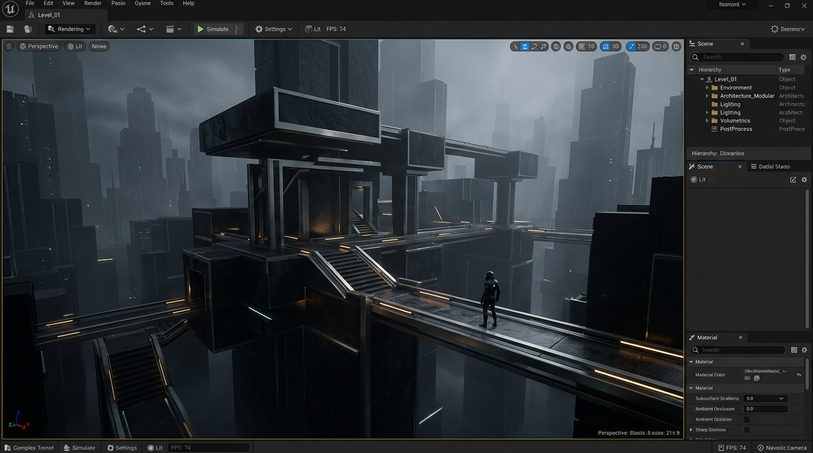
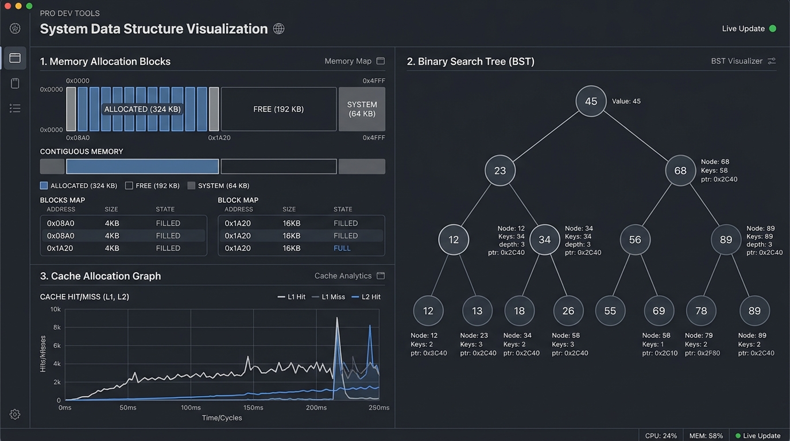
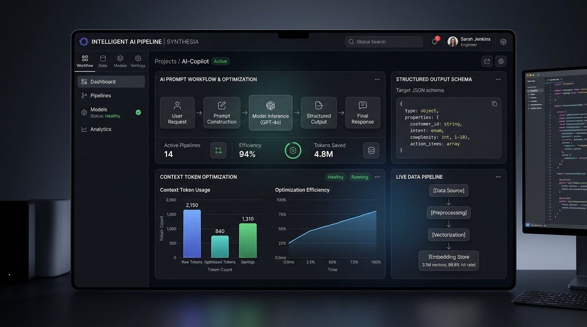

B.Tech Computer Science & Engineering · Class of 2030
Arjun Singh. Engineered for performance.
Systems-oriented software engineer and 3-time Hackathon Team Lead bridging low-level Lua game engine architecture, C++ algorithms, applied mathematical intuition, and AI prompt pipelines.
Selected Work
Built with systems-level discipline.
3D Engine & Distributed Architecture
Advanced 3D Spatial Engine & Game Architecture
Architected an atmospheric, high-fidelity 3D immersive world (ASC) with custom character animation pipelines, dynamic atmospheric lighting, and decoupled server-client networking using Luau metatables. Built to eliminate unauthorized state manipulation and deliver seamless multiplayer synchronization.

Systems & Memory Management
Algorithmic Systems & Data Structures
Implemented core data structures (self-balancing trees, dynamic arrays, graph algorithms, and custom contiguous allocators) from scratch in modern C++ with explicit pointer management and Big-O computational bounds.

AI Integration & Rapid Product
Hackathon Production Build & AI Pipeline
Directed architecture sprints to deliver an end-to-end technical prototype addressing operational challenges under tight 36-hour hackathon deadlines, integrated with context-optimized LLM prompt pipelines.

Track Record & Leadership
Competitive execution under pressure.
Background & Philosophy
The deepest understanding of software comes from building systems from scratch.
I am a 1st-year Computer Science engineer at RIET Jaipur. Rather than relying on superficial abstractions, I focus on fundamental mechanics: explicit memory profiling in C++, networked replication metatables in Luau, and token-compressed inference chains in LLM workflows.
As a 3-time Hackathon Team Lead, I treat hackathons as high-stakes engineering sprints—translating architectural decisions into production-ready software within strict 24- to 48-hour windows.
Everything is grounded in mathematical intuition: algorithmic asymptotic bounds (Big-O), discrete structures, spatial geometry, and matrix transformations.
Languages & Core
- Advanced Lua / Luau Metatables, OOP, RemoteEvents
- Modern C++ Pointers, Memory, STL, DSA
- Roblox Studio Engine Spatial UX, Physics, Anti-Cheat
- Discrete Mathematics Big-O Bounds, Matrix Math
AI & Workflows
- Prompt Architecture Chain-of-Thought, Evaluation
- Context Window Tuning Token Budget Compression
- Developer Toolchain Git, GitHub, Linux/CLI, VS Code
- Agile Sprint Planning Hackathon Team Leadership
Let's build something
extraordinary.
Available for competitive hackathon teams, open-source engineering, and early-career software engineering & technical product roles.